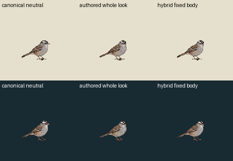
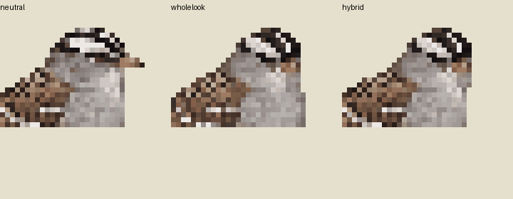

One deterministic source-pixel construction. The authored head and upper neck switch over a byte-stable neutral body, wing, tail, legs and feet. No new image call, pose painting, hidden underfill, rotation or source scaling. The cut boundary remains subject to independent seam, cluster and volume review.
| Existing whole authored key | Hybrid fixed body | |
|---|---|---|
| Light | ||
| Dark |
Actual legacy world123.428571 is preserved within a124CSS transparent ceiling stage, with no fit. Clock: neutral60 / authored head18 / neutral12 ticks at30Hz. No generated intermediates or physical support is claimed; contacts remain empty. Attention-only source proposal; runtime admission and rights clearance remain unresolved.
Exact transparent one-shot APNG · Construction recipe · Protected-pixel and seam diagnostics

Enlarged neckline inspection:
